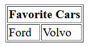

Day 2 — HTML Nested Lists & Tables
List Elements (<ul>, <ol>, <li>)
What it is: These tags are used to create lists. This is a perfect example of nesting, since
<li> elements go inside either <ul> or <ol>.
The Tags:
<ul>: An Unordered List. Creates a bulleted list.
<ol>: An Ordered List. Creates a numbered list.
<li>: A List Item. Each item in either type of list must be wrapped in an
<li> tag.
List Elements (<ul>, <ol>, <li>)
What it is: These tags are used to create lists. This is a perfect example of nesting, since
<li> elements go inside either <ul> or
<ol>.
Syntax for Unordered List (<ul>):
<ul> <li>Item 1</li> <li>Item 2</li> <li>Item 3</li> </ul>
Syntax for Ordered List (<ol>):
<ol> <li>First</li> <li>Second</li> <li>Third</li> </ol>
Syntax for Nested List:
<ul>
<li>Fruits
<ul>
<li>Apple</li>
<li>Banana</li>
</ul>
</li>
<li>Vegetables</li>
</ul>
Example:
Unordered List:
- Apples
- Bananas
- Cherries
Ordered List:
- Step One
- Step Two
- Step Three
Nested List:
-
Breakfast
- Main
- Mapple
- Freshed
- Whiped
- Side
- Dinner
- Main
-
Lunch
- Main
- Start
- Add
- place
- finish
- Side
- Beverage
- Main
-
Dinner
- Appetizer
- main
- First
- Next
- Finally
- Dessert
Tables
You can create a basic table to organize data. The example below shows a simple table with two columns, "Name" and "Favorite Color," and two rows of data.
Example Code
<table>
<tr>
<th>Name</th>
<th>Favorite Color</th>
</tr>
<tr>
<td>Alice</td>
<td>Blue</td>
</tr>
<tr>
<td>Bob</td>
<td>Green</td>
</tr>
</table>
The Tags:
<table>: The container for the entire table.
<tr>: A table row. It holds the cells for a single row.
<th>: A table header cell. It's used for column headers and is bold and
centered by default.
<td>: A table data cell. This is where the actual content of the table goes.
Result
| Name | Favorite Color |
|---|---|
| Alice | Blue |
| Bob | Green |
Cell Spanning: colspan and rowspan
These attributes are used to make a single table cell span across multiple columns or rows, which is useful for creating more complex table layouts.
colspan
The colspan attribute merges a cell across multiple columns. The value specifies how many columns the cell should span.
<table border="1">
<tr>
<th colspan="2">Favorite Cars</th>
</tr>
<tr>
<td>Ford</td>
<td>Volvo</td>
</tr>
</table>In this example, the "Favorite Cars" header spans over two columns.
rowspan
The rowspan attribute merges a cell down across multiple rows. The value specifies how many rows the cell should span.
<table border="1">
<tr>
<th>Name</th>
<td rowspan="2">Phone</td>
</tr>
<tr>
<td>Bill Gates</td>
</tr>
<tr>
<td>Steve Jobs</td>
<td>555 553 4444</td>
</tr>
</table>Here, the "Phone" cell spans across two rows.